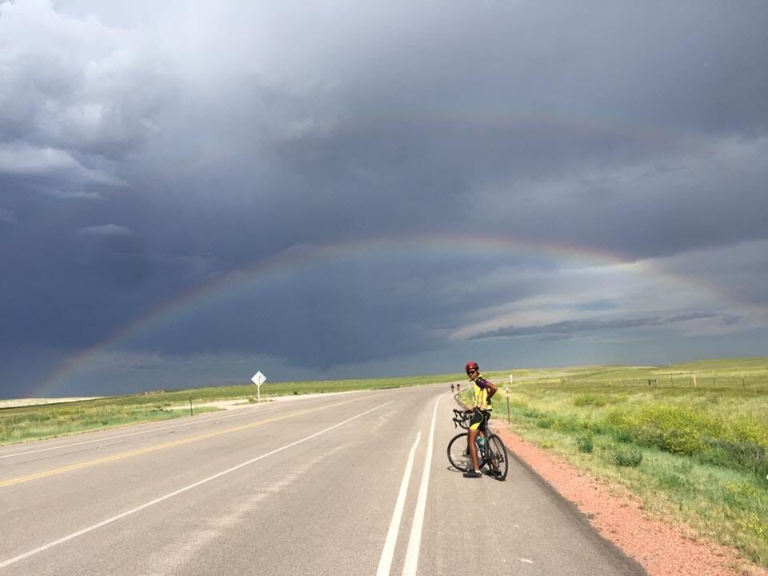

A hard day
Written in , after biking across America from Seattle to DC that summer.
Posted
My legs burned. I felt hollow. Empty. Eaten up by the road, the rain, and the heat. Lack of sleep gave me searing intermittent headaches. After grabbing a Honey Oats Granola Crunch bar from my saddle bag reserves, I trudged on. This shouldn’t be that hard, I thought. It’s biking. The previous night I only ate a 2000 calorie meal: 500 from a rice and chicken Thai dinner, and the rest from chocolate milks, ice cream, and pizza that I bought at the KOA in Sheridan, WY. I was burning 6500+ that day, riding 120 miles, and climbing 6000 feet. The problem was damn obvious.
There is a term in cycling called bonking. When you bonk, someone can look into your eyes and stare right through you. A paper-thin shell of yourself resides where your body once stood. Nausea, headaches, and muscle pain are common symptoms. It’s a bad feeling.
Riding the last three miles was brutal. Normally, a three-mile ride would have been nothing. I could do it in under nine minutes if I was feeling good. The short 9% grade hill near the end killed me. I ate some sugar tablets to keep moving. Ultimately I made it to our stay for the night, but I didn’t even feel like I was there.
